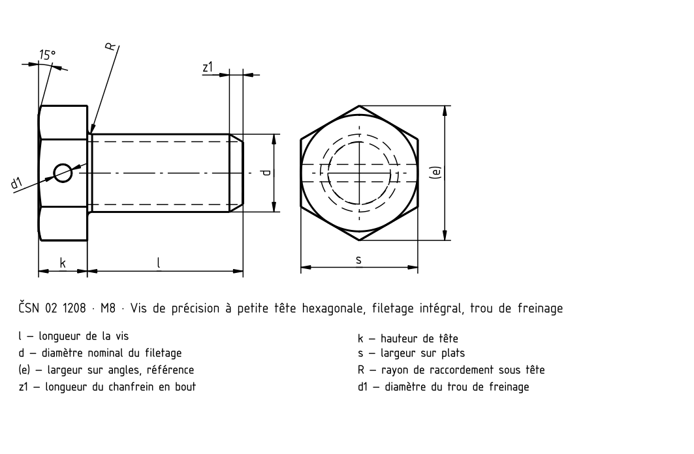
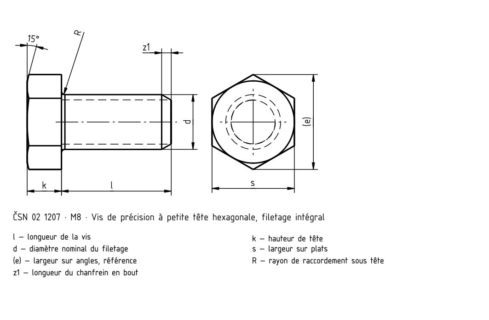
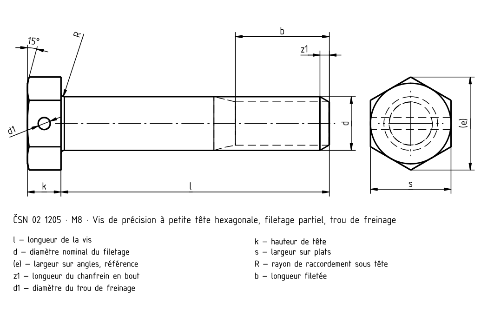
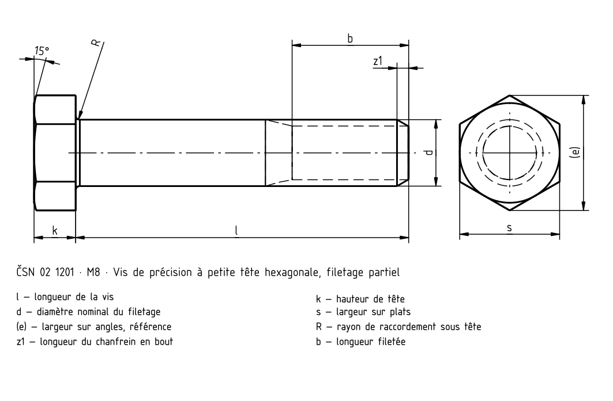

Boulons de précision à petite tête hexagonale
Source historique; valeurs et exceptions non intégralement vérifiées selon la norme actuelle.




Boulons de précision à petite tête hexagonale · Dimensions
| Paramètre | M6 | – | (M7) | – | M8 | M8×1 | M10 | M10×1,25 | M12 | M12×1,25 | M14 | M14×1,5 | M16 | M16×1,5 |
|---|---|---|---|---|---|---|---|
| a _max. | 2,5 | 2,5 | 3 | 4 | 4 | 4,5 | 4,5 |
| b | 11 | 13 | 14 | 16 | 18 | 20 | 22 |
| d 1 | 1,6 | 1,6 | 1,8 | 1,8 | 2 | 2 | 3 |
| e | 10,4 | 12,7 | 13,8 | 16,2 | 19,6 | 21,9 | 25,4 |
| k | 4 | 4,5 | 5 | 6 | 7 | 8 | 9 |
| R | 0,3 | 0,3 | 0,5 | 0,5 | 1 | 1 | 1 |
| s | 9 | 11 | 12 | 14 | 17 | 19 | 22 |
| X | 2,5 | 2,5 | 3,2 | 3,8 | 4,3 | 5,0 | 5,0 |
| X | – | – | 2,5 | 3,2 | 3,2 | 3,8 | 3,6 |
| z | 1,0 | 1,0 | 1,4 | 1,6 | 1,6 | 1,6 | 2,0 |
Boulons de précision à petite tête hexagonale · Dimensions
| Paramètre | M6 | – | (M7) | – | M8 | M8×1 | M10 | M10×1,25 | M12 | M12×1,25 | M14 | M14×1,5 |
|---|---|---|---|---|---|---|
| a _max. | 2,5 | 2,5 | 3 | 4 | 4 | 4,5 |
| b | 11 | 13 | 14 | 16 | 18 | 20 |
| d 1 | 1,6 | 1,6 | 1,8 | 1,8 | 2 | 2 |
| e | 10,4 | 12,7 | 13,8 | 16,2 | 19,6 | 21,9 |
| k | 4 | 4,5 | 5 | 6 | 7 | 8 |
| R | 0,3 | 0,3 | 0,5 | 0,5 | 1 | 1 |
| s | 9 | 11 | 12 | 14 | 17 | 19 |
| X | 2,5 | 2,5 | 3,2 | 3,8 | 4,3 | 5,0 |
| X | – | – | 2,5 | 3,2 | 3,2 | 3,8 |
| z | 1,0 | 1,0 | 1,4 | 1,6 | 1,6 | 1,6 |
Boulons de précision à petite tête hexagonale · Dimensions
| Paramètre | M16 | M16×1,5 |
|---|---|
| a _max. | 4,5 |
| b | 22 |
| d 1 | 3 |
| e | 25,4 |
| k | 9 |
| R | 1 |
| s | 22 |
| X | 5,0 |
| X | 3,6 |
| z | 2,0 |